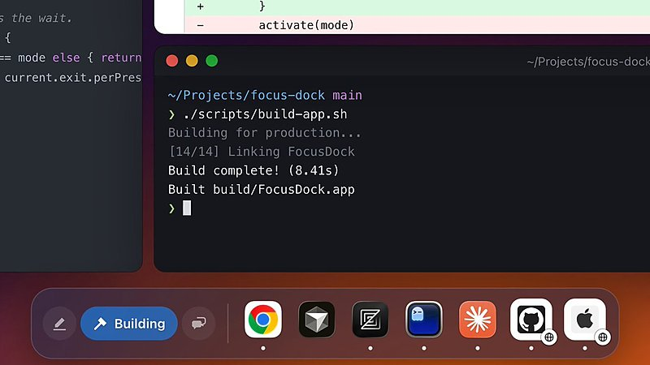
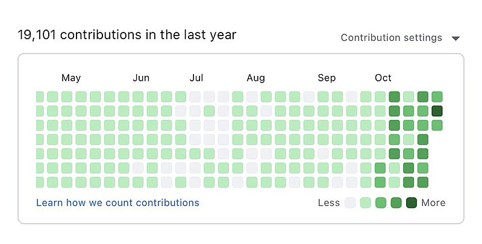

AI 日报 · 10月29日
Agent 走进企业流程，世界模型开始可交互
OpenAI 与 ServiceNow 扩大合作，让 ChatGPT 接入受权限约束的业务动作；Google DeepMind 发布可实时操控的 Genie 4 研究预览。Builder 正在试验新的 Agent 界面，也提醒我们关注实际部署、行动边界和验收。
企业 Agent
世界模型
交互界面
验证流程
4
Builder 动态
3
今日上榜项目
4
精选原文
1
公开视频
今日要点
业务动作须继承原有权限
OpenAI 与 ServiceNow 10 月 28 日宣布扩大合作。客户可连接自己的 ServiceNow 实例，让 ChatGPT 在对话中查询事件、评估变更并更新记录；可用能力由客户选择，Action Fabric 应用已有业务规则与权限。当前可用的是 ServiceNow MCP 插件，多项安全、语音和开发能力仍在计划或预览阶段。
仍是小范围研究预览
Google DeepMind 10 月 27 日公布 Genie 4：模型能生成可交互场景及原生音频，用户可在运行中用语言调整天气、镜头和角色。官方也列出长时一致性、复杂物理、文本清晰度等局限；目前仅向可信测试者开放，后续才计划扩展到订阅者与开发者。
深度对话
Agent 的大脑与执行环境如何分开
Latent Space 10 月 27 日发布对 Anthropic 平台负责人 Katelyn Lesse 与 Angela Jiang 的访谈。以下依据原频道节目简介和时间轴概括讨论主题，不转述未经核对的具体数字或发言。
模型与执行容器分离
节目在 1:03:25 进入“brain and hands”主题，随后讨论凭据与沙箱保护。
托管 Agent 的记忆与评估
42:10 起的章节涉及 Claude Managed Agents、记忆与 harness，以及如何评估 Agent。
平台扩容与安全路由
节目还设置了 CPU 约束、Messages API 重建、模型访问决定和安全分类器等章节。
资讯精选
官方发布与一线实践
OpenAI × ServiceNow｜受治理的工作流连接
ServiceNow MCP 插件已上架 OpenAI marketplace；更广泛的安全、语音与 Codex 集成有各自后续时间表，不能写成全面上线。
OpenAI 作者文章｜AI 进入企业组织图的三种设想
两位作者讨论 AI 位于员工之下、与员工并列、或处于管理层与员工之间的可能组织形态；原文明确注明为作者观点，不代表 OpenAI 立场。
已检查四条中文 RSS；Tw93 10 月 29 日有新文。其余条目取 10 月 27–28 日的一手材料，发布日期均单独标明；Genie 4 细节以 DeepMind 原文为准。
Builder 动态
Agent 界面、工作流与产能边界
Thariq｜试验可由 Agent 调整的 macOS Dock
Thariq 展示个人项目：Dock 按写作、构建等模式切换，Agent 可调整模式行为。他明确说仍有不少边界情况，暂不建议使用。配图取自原帖视频画面。

Aaron Levie｜企业 Agent 仍处早期
Box CEO 认为真正覆盖复杂企业流程的 Agent 仍少，电脑操作、长任务和 harness 的进步才开始让更复杂的自动化可行。帖中的部署比例只是他的估计，不能用作市场统计。
Garry Tan｜展示多 Agent 软件工厂的工作量
Y Combinator CEO 分享自己的 GitHub 活跃图，称 Capy Captains 同时运行 10–20 个子 Agent，带来更多 PR。这是其个人工作流展示；产出数量不直接等于代码质量。配图为原帖 GitHub 活跃图。

Dan Shipper｜视频与游戏或成为知识工作素材
Every CEO 提出判断：视频创作和游戏制作可能像文档、幻灯片一样，成为更普遍的知识工作基础形式。这是趋势观点，尚非已发生的普及事实。
GitHub Trending
设计技能、协作空间与本地 Agent


按 10 月 29 日 GitHub Trending 实时榜单筛选，避开昨日重点项目。星标、分叉、语言、主题取本次 GitHub API 快照，数字会变化；功能说明以仓库自述为准，尚未独立测评。
今日思考
ServiceNow 的合作公告把权限和业务规则放在 Agent 行动前面；Genie 4 展示了可交互环境，也主动列出模拟漂移等局限。两条进展共同提醒：界面和模型越能行动，越要明确哪些结果可检验、哪些动作可撤回。今日一问：如果你的 Agent 能进入一个新系统或新环境，你会怎样证明它做对了、又怎样阻止它越界？
参考来源
OpenAI｜与 ServiceNow 扩大合作
ServiceNow｜合作方公告
Google DeepMind｜Genie 4 原文
Tw93｜21 条 AI Coding 实践
OpenAI 作者文章｜The future of the firm
Latent Space｜Anthropic 平台访谈节目页
Latent Space｜原频道视频
Thariq｜Dock 实验原帖
Aaron Levie｜企业 Agent 原帖
Garry Tan｜多 Agent 工作流原帖
Dan Shipper｜视频与游戏原帖
GitHub｜10 月 29 日 Trending
elayadesign/ai-design-skills
macro-inc/macro
nightly-labs/openbot